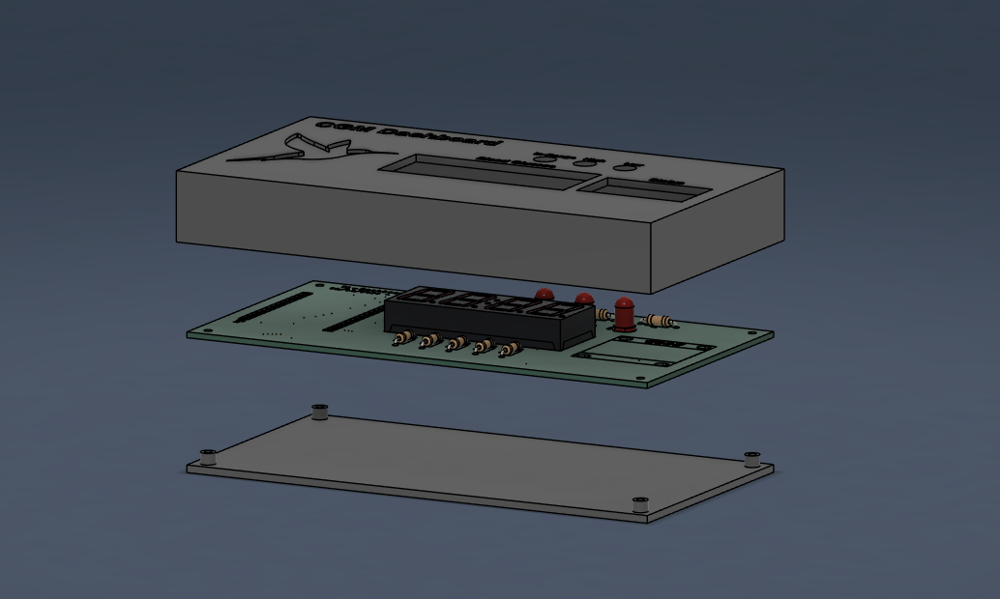

I designed an encasing for the PCB including labels for each display and LED, as well as cutouts for the USB-C port. The encasing is secured with M2 Screws. The design was created using AutoDesk Fusion 360, which allowed for precise measurements and adjustments to ensure a compact fit for the components.

Figure 1: Encasing Design in CAD.